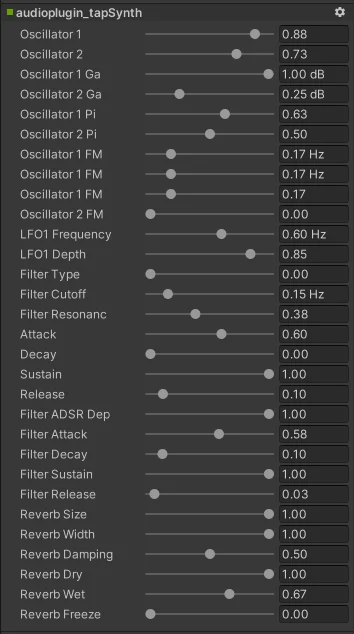

Introduction
Integrating JUCE audio plugins into Unity has never been easier thanks to JUCE's native support for exporting plugins as Unity plugins. However, the Unity plugin API has a limitation - it is primarily geared towards sound effects.

Although synth plugins can be loaded as well, it is not a trivial task to make them work properly. Their parameters can be accessed via the Unity C# API, but handling note messages and other features requires calling native code, which can seem daunting at first.
In this article, I will demonstrate how to use JUCE synths in Unity. We will dive into managing note on and off messages from a MonoBehaviour and provide example code that demonstrates how to add support for other arbitrary features.
A generic wrapper for synth plugins
I've created a JUCE user module that can help you get started with integrating your synth plugin with your Unity application. You can find the source code here. Add this to your plugin project and connect it to your plugin processor class following these steps:
- Add a
juce::MidiKeyboardStatemember to your processor, if you don't already have one. - Implement the
juce::MidiKeyboardState::Listenerinterface in your processor. - Add the processor as a listener to your keyboard state object in the processor's constructor.
- Do what you need to do in the
handleNoteOnandhandleNoteOffcallback methods to handle which notes are played by your synth. If you use thejuce::Synthesiserclass internally for your own audio processing, you can simply callmySynth.noteOn()andmySynth.noteOff()from these methods. - Implement the
playfultones::UnitySynthinterface in your processor. - Pass the keyboard state object to the
UnitySynthbase constructor from your processor's constructor. - Call
playfultones::UnitySynth::initialize();in your processor'sprepareToPlaymethod. It doesn't matter where inside the method it is called.
That's all! Now build your synth as a Unity plugin, and copy the generated .bundle (on Windows: .dll) file to a folder called Plugins inside the Assets folder of your Unity project.
You can find an example synth project that utilizes this module here.
This sums up all the steps that were necessary to take to prepare your JUCE project. In the next section, we'll look at how the boilerplate code looks like on the managed side.
Writing the C# counterpart of the wrapper class
The JUCE user module discussed in the previous section contained a couple of global methods that are compiled with C linkage. We'll access these methods from C# using a wrapper class that is created in the following way:
- Place a new
.csfile in yourPluginsfolder (next to the compiled synth plugin binaries) and call it something likeMySynth.cs. - Add the following code:
using System;
using System.Runtime.InteropServices;
public static class MySynth
{
#if UNITY_IPHONE
[DllImport ("__Internal")]
#else
[DllImport ("audioplugin_mySynth.bundle")]
#endif
private static extern IntPtr getInstance();
#if UNITY_IPHONE
[DllImport ("__Internal")]
#else
[DllImport ("audioplugin_mySynth.bundle")]
#endif
public static extern void noteOn(IntPtr ptr, int note, float velocity);
public static void noteOn(int note, float velo)
{
if(getInstance() != IntPtr.Zero)
noteOn(getInstance(), note, velo);
}
#if UNITY_IPHONE
[DllImport ("__Internal")]
#else
[DllImport("audioplugin_mySynth.bundle")]
#endif
public static extern void noteOff(IntPtr ptr, int note);
public static void noteOff(int note)
{
if (getInstance() != IntPtr.Zero)
noteOff(getInstance(), note);
}
}
- Change all occurrences of
audioplugin_mySynth.bundleto the name of your plugin binaries. If you're working on a multi-platform app, you might want to add an extra preprocessor condition for branching over Windows/macOS/etc. platforms with different binaries.
You are now ready to load the synth in your mixer. Call MySynth.noteOn() and MySynth.noteOff() from any MonoBehaviour. As long as your mixer is active and has the synth loaded, you should hear audio playback when you send note on messages to the plugin.
You can find an example Unity project that demonstrates this here.
Conclusion
This article provided an overview on how arbitrary method calls in the plugin processor can be integrated with MonoBehaviour scripts. As long as you add the same method signatures in the wrapper module in JUCE and the wrapper class in C#, you should be able to extend it with additional features (e.g. changing parameters, managing presets etc.).